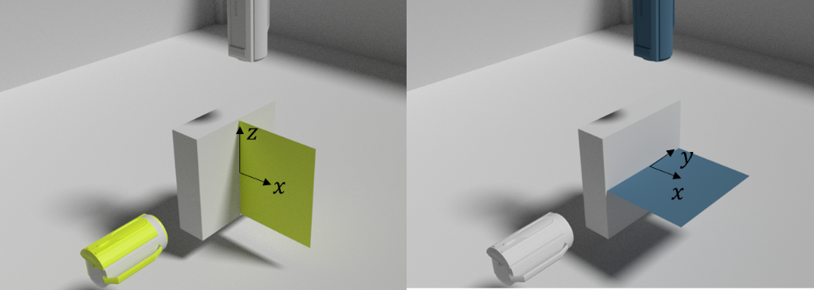
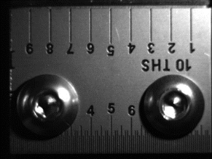

Without perspective¶
The considered camera configuration is the following:
The two cameras are positioned with a 90° angle and are both looking at the sample. The detected shot X and Z coordinates are therefore considered to be the one detected by the green camera. The Y coordinate is the one obtained with the blue camera. To convert the shot position value in pixel to spatial coordinates, a calibration picture of a ruler positioned at the camera focused distance has to be taken to obtain the camera pixel to cm ratio.
The pixel to cm ratio is simply taken as the length of the ruler in cm divided by it’s length on the screen in pixels. It can then be set in the camera object by setting the attribute data_treat.cam.Cam.pic_to_cm
This approach is implented in the function data_treat.reconstruction_3d.get_3d_nopersp()
-
data_treat.reconstruction_3d.get_3d_nopersp(minspan_len, traj_2d_left, traj_2d_top, cam_left, cam_top)[source]¶ Find the 3D trajectory of the ball by orthographic projection nor camera exact positions
- Parameters
minspan_len – number of time points
traj_2d_left – trajectory found by the left camera
traj_2d_top – trajectory found by the right camera
cam_top,cam_left – camera object for the top and left camera
- Returns
X,Y,Z coordinate list
Shot detection and 3D trajectory reconstruction using this method can be performed by calling the function data_treat.reonstruction_3d.reconstruct_3d() with the method attribute ‘no-persp’
This method is very simple both in terms of calibration and implementation. However, be aware that could lead to substantial errors when the shot is fired with an angle.